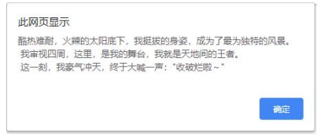
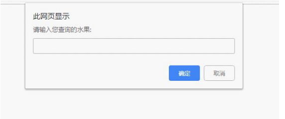

目录介绍：
1. 编程语言
1.1 编程
编程：就是让计算机为解决某个问题而使用某种程序设计语言编写程序代码，并最终得到结果的过程。
计算机程序：就是计算机所执行的一系列的指令集合，而程序全部都是用我们所掌握的语言来编写的，所以人们要控制计算机一定要通过计算机语言向计算机发出命令。
从事编程的人员，就是 程序员。 但是一般程序员都比较幽默，为了形容自己的辛苦工作，也成为“码农”， 或者 “程序猿”/ “程序媛”
注意： 上面所定义的计算机指的是任何能够执行代码的设备，可能是智能手机、ATM机、黑莓PI、服务器 等等
1.2 计算机语言
计算机语言指用于人与计算机之间通讯的语言，它是人与计算机之间传递信息的媒介。
计算机语言的种类非常的多，总的来说可以分成机器语言，汇编语言和高级语言三大类。
实际上计算机最终所执行的都是 机器语言，它是由“0”和“1”组成的二进制数，二进制是计算机语言的基础。
0=00000000 1=00000001 2=00000010 3=00000011 4=00000100 5=00000101
6=00000110 7=00000111 8=00001000 9=00001001 10=00001010
1.3 编程语言
可以通过类似于人类语言的 ”语言”来控制计算机，让计算机为我们做事情，这样的语言就叫做编程语言（Programming Language）
编程语言是用来控制计算机的一系列指令，它有固定的格式和词汇（不同编程语言的格式和词汇不一样），必须遵守。 如今通用的编程语言有两种形式：汇编语言和高级语言。
- 汇编语言和机器语言实质是相同的，都是直接对硬件操作，只不过指令采用了英文缩写的标识符，容易识别和记忆。
- 高级语言主要是相对于低级语言而言，它并不是特指某一种具体的语言，而是包括了很多编程语言，常用的有C语言、C++、 Java、C#、Python、PHP、JavaScript、Go语言、Objective-C、Swift等。
C语言：puts("你好");
PHP：echo "你好";
Java：System.out.println("你好");
JavaScript：alert("你好"）;
1.4 翻译器
高级语言所编制的程序不能直接被计算机识别，必须经过转换才能被执行，为此，我们需要一个翻译器。
翻译器可以将我们所编写的源代码转换为机器语言，这也被称为二进制化。 记住1和 0。

1.5 编程语言和标记语言区别
- 编程语言有很强的逻辑和行为能力。在编程语言里, 你会看到很多 if else 、for 、while等具有逻辑性和行为能力的 指令，这是主动的。
- 标记语言（html）不用于向计算机发出指令，常用于格式化和链接。标记语言的存在是用来被读取的, 他是被动的
总结
- 计算机可以帮助人类解决某些问题
- 程序员利用编程语言编写程序发出指令控制计算机来实现这些任务
- 编程语言有机器语言、汇编语言、高级语言
- 高级语言需要一个翻译器转换为计算机识别的机器语言
- 编程语言是主动的有很强的逻辑性
目录介绍：
2. 计算机基础
2.1 计算机组成
2.2 数据存储
- 计算机内部使用二进制 0 和 1来表示数据
- 所有数据，包括文件、图片等最终都是以二进制数据（0 和 1）的形式存放在硬盘中的。
- 所有程序，包括操作系统，本质都是各种数据，也以二进制数据的形式存放在硬盘中。平时我们所说的安装软件，其实就是把程序文件复制到硬盘中。
- 硬盘、内存都是保存的二进制数据。
2.3 数据存储单位
bit < byte < kb < GB < TB<.....
- 位(bit)： 1bit 可以保存一个 0 或者 1 （最小的存储单位）
- 字节(Byte)：1B = 8b
- 千字节(KB)：1KB = 1024B
- 兆字节(MB)：1MB = 1024KB
- 吉字节(GB): 1GB = 1024MB
- 太字节(TB): 1TB = 1024GB
- ......
2.4 程序运行

- 1. 打开某个程序时，先从硬盘中把程序的代码加载到内存中
- 2. CPU执行内存中的代码
注意：之所以要内存的一个重要原因，是因为 cpu 运行太快了，如果只从硬盘中读数据，会浪费cpu性能，所以，才使用存取速度更快的内存来保存运行时的数据。（内存是电，硬盘是机械）
目录介绍：
1. 初识 JavaScript
1.1 JavaScript 是什么
- 布兰登·艾奇（Brendan Eich，1961年～）。
- 神奇的大哥用10天完成 JavaScript 设计
- 最初命名为 LiveScript，后来在与 Sun 合作之后将其改名为 JavaScript。
- JavaScript 是世界上最流行的语言之一，是一种运行在客户端的脚本语言 （Script 是脚本的意思）
- 脚本语言：不需要编译，运行过程中由 js 解释器( js 引擎）逐行来进行解释并执行
- 现在也可以基于 Node.js 技术进行服务器端编程
为了阅读方便，我们后面把JavaScript 简称为 JS。
1.2 JavaScript 的作用
- 表单动态校验（密码强度检测）（ JS 产生最初的目的 ）
- 网页特效
- 服务端开发(Node.js)
- 桌面程序(Electron)
- App(Cordova)
- 控制硬件-物联网(Ruff)
- 游戏开发(cocos2d-js)
1.3 HTML/CSS/JS 的关系
HTML/CSS 标记语言--描述类语言
- HTML 决定网页结构和内容( 决定看到什么 )，相当 于人的身体
- CSS 决定网页呈现给用户的模样( 决定好不好看 )， 相当于给人穿衣服、化妆
JS 脚本语言--编程类语言
- 实现业务逻辑和页面控制( 决定功能 )，相当于人的各种动作
1.4 浏览器执行 JS 简介
浏览器分成两部分：渲染引擎和 JS 引擎
- 渲染引擎：用来解析HTML与CSS，俗称内核，比如 chrome 浏览器的 blink ，老版本的 webkit
- JS 引擎：也称为 JS 解释器。 用来读取网页中的JavaScript代码，对其处理后运行，比如 chrome 浏览器的V8
浏览器本身并不会执行JS代码，而是通过内置 JavaScript 引擎(解释器) 来执行 JS 代码 。JS 引擎执行代码时逐行解释每一句源码（转换为机器语言），然后由计算机去执行，所以 JavaScript 语言归为脚本语言，会逐行解释执行。

1.5 JS 的组成
1.5.1 ECMAScript
ECMAScript 是由ECMA 国际（ 原欧洲计算机制造商协会）进行标准化的一门编程语言，这种语言在万维网上应用广泛，它往往被称为 JavaScript 或 JScript，但实际上后两者是 ECMAScript 语言的实现和扩展。

ECMAScript：ECMAScript 规定了JS的编程语法和基础核心知识，是所有浏览器厂商共同遵守的一套JS语法工业标准。
更多参看MDN: : https://developer.mozilla.org/zh-CN/docs/Web/JavaScript/JavaScript_technologies_overview
1.5.2 DOM ——文档对象模型
文档对象模型 （Document Object Model，简称DOM），是W3C组织推荐的处理可扩展标记语言的标准编程接口。通过 DOM 提供的接口可以对页面上的各种元素进行操作（大小、位置、颜色等）。
1.5.3 BOM ——浏览器对象模型
BOM (Browser Object Model，简称BOM) 是指浏览器对象模型，它提供了独立于内容的、可以与浏览器窗口进行互动的对象结构。通过BOM可以操作浏览器窗口，比如弹出框、控制浏览器跳转、获取分辨率等。
1.6 JS 初体验
JS 有3种书写位置，分别为行内、内嵌和外部。
1.6.1 行内式 JS

- 可以将单行或少量 JS 代码写在HTML标签的事件属性中（以 on 开头的属性），如：onclick
- 注意单双引号的使用：在HTML中我们推荐使用双引号,JS 中我们推荐使用单引号
- 可读性差， 在html中编写JS大量代码时，不方便阅读；
- 引号易错，引号多层嵌套匹配时，非常容易弄混；
- 特殊情况下使用
JS 有3种书写位置，分别为行内、内嵌和外部。
1.6.2 内嵌 JS

- 可以将多行JS代码写到script标签中
- 内嵌 JS 是学习时常用的方式
JS 有3种书写位置，分别为行内、内嵌和外部。
1.6.3 外部 JS文件

- 利于HTML页面代码结构化，把大段 JS代码独立到 HTML 页面之外，既美观，也方便文件级别的复用
- 引用外部 JS文件的 script 标签中间不可以写代码
- 适合于JS 代码量比较大的情况
目录介绍：
2. JavaScript注释
2.1 单行注释
为了提高代码的可读性，JS与CSS一样，也提供了注释功能。JS中的注释主要有两种，分别是单行注释和多行注释。单行注释的注释方式如下：
// 我是一行文字，不想被 JS引擎 执行，所以 注释起来
// 用来注释单行文字（ 快捷键 ctrl + / ）
2.2 多行注释
多行注释的注释方式如下：
/* 获取用户年龄和姓名
并通过提示框显示出来 */
/* */ 用来注释多行文字（ 默认快捷键 alt + shift + a ）
快捷键修改为： ctrl + shift + /
vscode → 首选项按钮 → 键盘快捷方式 → 查找 原来的快捷键 → 修改为新的快捷键 → 回车确认
目录介绍：
3. JavaScript 输入输出语句
为了方便信息的输入输出，JS中提供了一些输入输出语句，其常用的语句如下：
| 方法 | 说明 | 归属 |
|---|---|---|
| alert(msg) | 浏览器弹出警示框 | 浏览器 |
| console.log(msg) | 浏览器控制台打印输出信息 | 浏览器 |
| prompt(info) | 浏览器弹出输入框，用户可以输入 | 浏览器 |
注意：alert() 主要用来显示消息给用户，console.log() 用来给程序员自己看运行时的消息。
目录介绍：
1. 变量概述
1.1 什么是变量
白话：变量就是一个装东西的盒子。
通俗：变量是用于存放数据的容器。 我们通过变量名 获取数据，甚至数据可以修改。

1.2 变量在内存中的存储
本质：变量是程序在内存中申请的一块用来存放数据的空间。
类似我们酒店的房间，一个房间就可以看做是一个变量。

目录介绍：
2. 变量的使用
变量在使用时分为两步： 1. 声明变量 2. 赋值
2.1 声明变量
// 声明变量
var age; // 声明一个 名称为age 的变量
- var 是一个 JS关键字，用来声明变量( variable 变量的意思 )。使用该关键字声明变量后，计算机会自动为变量分配内存空间，不需要程序员管
- age 是程序员定义的变量名，我们要通过变量名来访问内存中分配的空间
2.2 赋值
age = 10; // 给 age 这个变量赋值为 10
- = 用来把右边的值赋给左边的变量空间中 此处代表赋值的意思
- 变量值是程序员保存到变量空间里的值
2.3 变量的初始化
var age = 18; // 声明变量同时赋值为 18
声明一个变量并赋值， 我们称之为变量的初始化。
案例：变量的使用
有个叫卡卡西的人在旅店登记的时候前台让他填一张表，这张表里的内容要存到电脑上，表中的内容有：姓名、年龄、邮箱、家庭住址和工资，存储之后需要把这些信息显示出来，所显示的内容如下：
我叫旗木卡卡西，我住在火影村，我今年30岁了，我的邮箱是 kakaxi@itcast.cn，我的工资2000
案例：变量的使用
1. 弹出一个输入框，提示用户输入姓名
2. 弹出一个对话框，输出用户刚才输入的姓名。

目录介绍：
3. 变量语法扩展
3.1 更新变量
一个变量被重新复赋值后，它原有的值就会被覆盖，变量值将以最后一次赋的值为准。
var age = 18;
age = 81;//最后的结果就是81因为18被覆盖掉了
3.2 同时声明多个变量
同时声明多个变量时，只需要写一个 var， 多个变量名之间使用英文逗号隔开。
var age = 10, name = 'zs', sex = 2;
3.3 声明变量特殊情况
| 情况 | 说明 | 结果 |
|---|---|---|
| var age ; console.log (age); | 只声明 不赋值 | undefined |
| console.log(age) | 不声明 不赋值 直接使用 | 报错 |
| age = 10; console.log (age); | 不声明 只赋值 | 10 |

目录介绍：
4. 变量命名规范
- 由字母(A-Za-z)、数字(0-9)、下划线(_)、美元符号( $ )组成，如：usrAge, num01, _name
- 严格区分大小写。var app; 和 var App; 是两个变量
- 不能 以数字开头。 18age 是错误的
- 不能 是关键字、保留字。例如：var、for、while
- 变量名必须有意义。 MMD BBD nl → age
- 遵守驼峰命名法。首字母小写，后面单词的首字母需要大写。 myFirstName
- 推荐翻译网站： 有道 爱词霸


目录介绍：
案例：课堂练习
要求：交换两个变量的值 ( 实现思路：使用一个 临时变量 用来做中间存储 )

小结
1，为什么需要变量？
因为我们一些数据需要保存，所以需要变量。
2，变量是什么？
变量就是一个容器，用来存放数据的。方便我们以后使用里面的数据。
3，变量的本质是什么?
变量是内存里的一块空间，用来存储数据。
4，变量怎么使用的？
我们使用变量的时候，一定要声明变量，然后赋值。
声明变量本质是去内存申请空间。
5，什么是变量的初始化？
声明变量并赋值我们称之为变量的初始化。
6，变量命名规范有哪些？
变量名尽量要规范，见名知意——驼峰命名法。
7，交换2个变量值的思路？
区分哪些变量名不合法 学会交换2个变量
目录介绍：
1. 数据类型简介
1.1 为什么需要数据类型
在计算机中，不同的数据所需占用的存储空间是不同的，为了便于把数据分成所需内存大小不同的数据，充分利用存储空间，于是定义了不同的数据类型。
简单来说，数据类型就是数据的类别型号。比如姓名“张三”，年龄18，这些数据的类型是不一样的
1.2 变量的数据类型
变量是用来存储值的所在处，它们有名字和数据类型。变量的数据类型决定了如何将代表这些值的位存储到计算机的内存中。JavaScript 是一种弱类型或者说动态语言。 这意味着不用提前声明变量的类型，在程序运行过程中，类型会被自动确定。
var age = 10; // 这是一个数字型
var areYouOk = '是的'; //这是一个字符串
在代码运行时，变量的数据类型是由 JS引擎 根据 = 右边变量值的数据类型来判断 的，运行完毕之后， 变量就确定了数据类型。JavaScript 拥有动态类型，同时也意味着相同的变量可用作不同的类型：
var x = 6; // x 为数字
var x = "Bill"; // x 为字符串
1.3 数据类型的分类
JS 把数据类型分为两类：
- 简单数据类型 （Number,String,Boolean,Undefined,Null）
- 复杂数据类型 （object）
目录介绍：
2. 简单数据类型
2.1 简单数据类型（基本数据类型）
JavaScript 中的简单数据类型及其说明如下：

2.2 数字型 Number
JavaScript 数字类型既可以用来保存整数值，也可以保存小数(浮点数）。
var age = 21; // 整数
var Age = 21.3747; // 小数
2.2.1 数字型进制
最常见的进制有二进制、八进制、十进制、十六进制。
// 1.八进制数字序列范围：0~7
var num1 = 07; // 对应十进制的7
var num2 = 019; // 对应十进制的19
var num3 = 08;//对应十进制的8
// 2.十六进制数字序列范围：0~9以及A~F
var num = 0xA;
现阶段我们只需要记住，在JS中八进制前面加0，十六进制前面加 0x
2.2.2 数字型范围
JavaScript中数值的最大和最小值
alert(Number.MAX_VALUE);// 1.7976931348623157e+308
alert(Number.MIN_VALUE); // 5e-324
- 最大值：Number.MAX_VALUE，这个值为： 1.7976931348623157e+308
- 最小值：Number.MIN_VALUE，这个值为：5e-32
2.2.3 数值型三个特殊值
alert(Infinity); // Infinity
alert(-Infinity); // -Infinity
alert(NaN); // NaN
- Infinity ，代表无穷大，大于任何数值
- -Infinity ，代表无穷小，小于任何数值
- NaN ，Not a number，代表一个非数值
2.2.4 isNaN()
用来判断一个变量是否为非数字的类型，返回 true 或者 false
var usrAge = 21;
var isOk = isNaN(userAge);
console.log(isNum); // false ，21 不是一个非数字
var usrName = "andy";
console.log(isNaN(userName)); // true ，"andy"是一个非数字


2.3 字符串型 String
字符串型可以是引号中的任意文本，其语法为 双引号"" 和单引号''
var strMsg = "我爱北京天安门~"; // 使用双引号表示字符串
var strMsg2 = '我爱吃猪蹄~'; // 使用单引号表示字符串
// 常见错误
var strMsg3 = 我爱大肘子; //
报错，没使用引号，会被认为是js代码，但js没有这些语法
因为 HTML 标签里面的属性使用的是双引号，JS 这里我们更推荐使用单引号。
2.3.1 字符串引号嵌套
JS 可以用单引号嵌套双引号，或者用双引号嵌套单引号 (外双内单，外单内双)
var strMsg = '我是"高帅富"程序猿'; // 可以用''包含""
var strMsg2 = "我是'高帅富'程序猿"; // 也可以用"" 包含''
// 常见错误
var badQuotes = 'What on earth?"; // 报错，不能 单双引号搭
2.3.2 字符串转义符
类似HTML里面的特殊字符，字符串中也有特殊字符，我们称之为转义符。
转义符都是 \ 开头的，常用的转义符及其说明如下：
| 转义符 | 解释说明 |
|---|---|
| \n | 换行符，n 是 newline 的意思 |
| \ \ | 斜杠 \ |
| \' | ' 单引号 |
| \" | ”双引号 |
| \t | tab 缩进 |
| \b | 空格 ，b 是 blank 的 |
案例：弹出网页警示框
酷热难耐，火辣的太阳底下，我挺拔的身姿，成为了最为独特的风景。我审视四周，这里，是我的舞台，我就 是天地间的王者。这一刻，我豪气冲天，终于大喊一声："收破烂啦～"

2.2.3 字符串长度
字符串是由若干字符组成的，这些字符的数量就是字符串的长度。通过字符串的 length 属性可以获取整个字符串的长度
var strMsg = "我是帅气多金的程序猿！";
alert(strMsg.length); // 显示 11
2.3.4 字符串拼接
- 多个字符串之间可以使用 + 进行拼接，其拼接方式为字符串 + 任何类型 = 拼接之后的新字符串
- 拼接前会把与字符串相加的任何类型转成字符串，再拼接成一个新的字符串
//1.1 字符串 "相加"
alert('hello' + ' ' + 'world'); // hello world
//1.2 数值字符串 "相加"
alert('100' + '100'); // 100100
//1.3 数值字符串 + 数值
alert('11' + 12); // 1112
+ 号总结口诀：数值相加 ，字符相连
2.3.5 字符串拼接加强
console.log('pink老师' + 18); // 只要有字符就会相连
var age = 18;
// console.log('pink老师age岁啦'); // 这样不行哦
console.log('pink老师' + age); // pink老师18
console.log('pink老师' + age + '岁啦'); // pink老师18岁啦
- 我们经常会将字符串和变量来拼接，因为变量可以很方便地修改里面的值
- 变量是不能添加引号的，因为加引号的变量会变成字符串
- 如果变量两侧都有字符串拼接，口诀“引引加加”，删掉数字，变量写加中间

案例：显示年龄
弹出一个输入框，需要用户输入年龄，之后弹出一个警示框显示“您今年 xx 岁啦”（xx 表示刚才输

案例分析
这是利用 JS 编写的一个非常简单的交互效果程
交互编程的三个基本要素：
1. 你喜欢我吗？→ 这是用户输入
2. 女孩想了想 → 这是 程序内部处理
3. 女孩回答：“我也喜欢你。” → 这是输出结果
那么在程序中要如何实现呢？
① 弹出一个输入框（prompt)，让用户输入年龄（用户输入）
②把用户输入的值用变量保存起来,把刚才输入的年龄与所要输出的字符串拼接
（程序内部处理）
③ 使用alert语句弹出警示框（输出结果）
案例代码
// 弹出一个输入框（prompt)，让用户输入年龄（用户输入）
//把用户输入的值用变量保存起来,把刚才输入的年龄与所要输出的字符串拼接（程序内部处理）
// 使用alert语句弹出警示框（输出结果）
var age = prompt('请输入您的年龄');
var str = '您今年已经' + age + '岁了';
alert(str);
2.4 布尔型 Boolean
布尔类型有两个值：true 和 false ，其中 true 表示真（对），而 fals
布尔型和数字型相加的时候， true 的值为 1 ，false 的值为 0。
console.log(true + 1); // 2
console.log(false + 1); // 1
2.5 Undefined 和 Null
一个声明后没有被赋值的变量会有一个默认值 undefined ( 如果进行相连或者相加时，注意结果）
var variable;
console.log(variable); // undefined
console.log('你好' + variable); // 你好undefined
console.log(11 + variable); // NaN
console.log(true + variable); // NaN
一个声明变量给 null 值，里面存的值为空（学习对象时，我们继续研究null)
var vari = null;
console.log('你好' + vari); // 你好null
console.log(11 + vari); // 11
console.log(true + vari); // 1

目录介绍：
3. 获取变量数据类型
3.1 获取检测变量的数据类型
typeof 可用来获取检测变量的数据类型
var num = 18;
console.log(typeof num) // 结果 number
不同类型的返回值
3.2 字面量
字面量是在源代码中一个固定值的表示法，通俗来说，就是字面量表示如何表达这个值。
- 数字字面量：8, 9, 10
- 字符串字面量：'黑马程序员', "大前端"
- 布尔字面量：true，false
目录介绍：
4. 数据类型转换
4.1 什么是数据类型转换
使用表单、prompt 获取过来的数据默认是字符串类型的，此时就不能直接简单的进行加法运算，而需要转换变 量的数据类型。通俗来说，就是把一种数据类型的变量转换成另外一种数据类型
我们通常会实现3种方式的转换：
- 转换为字符串类型
- 转换为数字型
- 转换为布尔型
4.2 转换为字符串
- toString() 和 String() 使用方式不一样
- 三种转换方式，我们更喜欢用第三种加号拼接字符串转换方式， 这一种方式也称之为隐式转换
4.3 转换为数字型（重点）

- 注意 parseInt 和 parseFloat 单词的大小写，这2个是重点
- 隐式转换是我们在进行算数运算的时候，JS 自动转换了数据类型
案例 1：计算年龄
此案例要求在页面中弹出一个输入框，我们输入出生年份后， 能计算出我们的年龄

案例分析
① 弹出一个输入框（prompt)，让用户输入出生年份 （用户输入）
②把用户输入的值用变量保存起来，然后用今年的年份减去变量值，结果就是现在的年龄
（程序内部处理）
③ 弹出警示框（alert) ， 把计算的结果输出 （输出结果）
案例代码
// 1. 弹出输入框，输入出生年份，并存储在变量中
var year = prompt('请输入您的出生年份：'); // 用户输入
// 2. 用今年减去刚才输入的年份
var result = 2019 - year; // 程序内部处理
// 3. 弹出提示框
alert('您的年龄是:' + result + '岁'); // 输出结果

案例 2：简单加法
计算两个数的值， 用户输入第一个值后，继续弹出第二个输入框并输入第二个值，最后通过弹出窗口显示出两次输入值相加的结果。
案例分析
① 先弹出第一个输入框，提示用户输入第一个值 保存起来
② 再弹出第二个框，提示用户输入第二个值 保存起来
③ 把这两个值相加，并将结果赋给新的变量（注意数据类型转换）
④ 弹出警示框（alert) ， 把计算的结果输出 （输出结果
）
案例代码
// 1. 先弹出第一个输入框，提示用户输入第一个值
var num1 = prompt('请输入第一个值：');
// 2. 再弹出第二个框，提示用户输入第二个值
var num2 = prompt('请输入第二个值：');
// 3. 将输入的值转换为数字型后，把这两个值相加，并将结果赋给新的变量
var result = parseFloat(num1) + parseFloat(num2);
// 4. 弹出结果 alert('结果是:' + result);

4.4 转换为布尔型

- 代表空、否定的值会被转换为 false ，如 ''、0、NaN、null、undefine
- 其余值都会被转换为 true
console.log(Boolean('')); // false
console.log(Boolean(0)); // false
console.log(Boolean(NaN)); // false
console.log(Boolean(null)); // false
console.log(Boolean(undefined)); // false
console.log(Boolean('小白')); // true
console.log(Boolean(12)); // true

目录介绍：
1. 解释型语言和编译型语言
1.1 概述
计算机不能直接理解任何除机器语言以外的语言，所以必须要把程序员所写的程序语言翻译成机器语言才能执行程序。程序语言翻译成机器语言的工具，被称为翻译器。

- 翻译器翻译的方式有两种：一个是编译，另外一个是解释。两种方式之间的区别在于翻译的时间点不同
- 编译器是在代码执行之前进行编译，生成中间代码文件
- 解释器是在运行时进行及时解释，并立即执行(当编译器以解释方式运行的时候，也称之为解释器)
2.2 执行过程
类似于请客吃饭：
- 编译语言：首先把所有菜做好，才能上桌吃饭
- 解释语言：好比吃火锅，边吃边涮，同时进行
目录介绍：
2. 标识符、关键字、保留字
2.1 标识符
标识(zhi)符：就是指开发人员为变量、属性、函数、参数取的名字。
标识符不能是关键字或保留字。
2.3 关键字
关键字：是指 JS本身已经使用了的字，不能再用它们充当变量名、方法名。
包括：break、case、catch、continue、default、delete、do、else、finally、for、function、if、in、instanceof、new、return、switch、this、throw、try、typeof、var、void、while、with 等。
2.3 保留字
保留字：实际上就是预留的“关键字”，意思是现在虽然还不是关键字，但是未来可能会成为关键字，同样不能使用它们当变量名或方法名。
包括：boolean、byte、char、class、const、debugger、double、enum、export、extends、fimal、float、goto、implements、import、int、interface、long、mative、package、private、protected、public、short、static、super、synchronized、throws、transient、volatile 等。
注意：如果将保留字用作变量名或函数名，那么除非将来的浏览器实现了该保留字，否则很可能收不到任何错误消息。当浏览器将其实现后，该单词将被看做关键字，如此将出现关键字错误。
目录介绍：
3. 课后作业
1. 给同桌讲讲交换两个变量的值 算法（不管他愿不愿听）
2. 依次询问并获取用户的姓名、年龄、性别，并打印用户信息如图
自己写的：
var name = prompt("请输入你的姓名");
var age = prompt("请输入你的年龄");
var sex = prompt("请输入你的性别");
var resul = "你的姓名是:" + name + "\n你的年龄是:" + age + "岁" +
"\n你的性别是:" + sex;
alert(resul);
目录介绍：
1. 运算符
运算符（operator）也被称为操作符，是用于实现赋值、比较和执行算数运算等功能的符号。
JavaScript中常用的运算符有：
- 算数运算符
- 递增和递减运算符
- 比较运算符
- 逻辑运算符
- 赋值运算符
目录介绍：
2. 算数运算符
2.1 算术运算符概述
概念：算术运算使用的符号，用于执行两个变量或值的算术运算。

2.2 浮点数的精度问题
浮点数值的最高精度是 17 位小数，但在进行算术计算时其精确度远远不如整数。
var result = 0.1 + 0.2; // 结果不是
0.3，而是：0.30000000000000004
>console.log(0.07 * 100); // 结果不是 7， 而是：7.000000000000001
所以：不要直接判断两个浮点数是否相等!
（问题在于计算机将小数转换成二进制的数，这个二进制的数是个约数！)

2.3 课堂提问
1. 我们怎么判断 一个数能够被整除呢？
它的余数是0 就说明这个数能被整除， 这就是 % 取余运算符的主要用途
2. 请问 1 + 2 * 3 结果是？
结果是7 ，注意算术运算符优先级的，先乘除，后加减，有小括号先算小括号里面的
2.4 表达式和返回值
表达式：是由数字、运算符、变量等以能求得数值的有意义排列方法所得的组合
简单理解：是由数字、运算符、变量等组成的式子
表达式最终都会有一个结果，返回给我们，我们成为返回值

目录介绍：
3. 递增和递减运算符
3.1 递增和递减运算符概述
如果需要反复给数字变量添加或减去1，可以使用递增（++）和递减（ -- ）运算符来完成。
在 JavaScript 中，递增（++）和递减（ -- ）既可以放在变量前面，也可以放在变量后面。放在变量前面时，我们可以称为前置递增（递减）运算符，放在变量后面时，我们可以称为后置递增（递减）运算符。
注意: 递增和递减运算符必须和变量配合使用。
3.2 递增运算符
3.2.1 前置递增运算符
++num 前置递增，就是自加1，类似于 num = num + 1，但是 ++num 写起来更简单。
使用口诀：先自加，后返回值
var num = 10;
alert(++num + 10); // 21
3.2.2 后置递增运算符
num++ 后置递增，就是自加1，类似于 num = num + 1 ，但是 num++ 写起来更简单。
使用口诀：先返回原值，后自加
var num = 10;
alert(10 + num++); // 20
3.3 前置递增和后置递增小结
- 前置递增和后置递增运算符可以简化代码的编写，让变量的值 + 1 比以前写法更简单
- 单独使用时，运行结果相同
- 与其他代码联用时，执行结果会不同
- 后置：先原值运算，后自加（先人后己）
- 前置：先自加，后运算（先已后人）
- 开发时，大多使用后置递增/减，并且代码独占一行，例如：num++; 或者 num--;

目录介绍：
4. 比较运算符
4.1 比较运算符概述
概念：比较运算符（关系运算符是两个数据进行比较时所使用的运算符 ，比较运算后，会返回一个布尔值（true / false）作为比较运算的结果

4.2 =小结

console.log(18 == '18');
console.log(18 === '18');

目录介绍：
5. 逻辑运算符
5.1 逻辑运算符概述
概念：逻辑运算符是用来进行布尔值运算的运算符，其返回值也是布尔值。后面开发中经常用于多个条件的判断

5.2 逻辑与&&
两边都是 true才返回 true，否则返回 false

5.3 逻辑或 ||
两边都为 false 才返回 false，否则都为true

5.3 逻辑非 ！
逻辑非（!也叫作取反符，用来取一个布尔值相反的值，如 true 的相反值是 false
var isOk = !true;
console.log(isOk); // false
5.4 短路运算（逻辑中断）
短路运算的原理：当有多个表达式（值）时,左边的表达式值可以确定结果时,就不再继续运算右边的表达式的值;
5.4.1 逻辑与
- 语法：表达式1 && 表达式2
- 如果第一个表达式的值为真，则返回表达式2
- 如果第一个表达式的值为假，则返回表达式1
console.log( 123 && 456 ); // 456
console.log( 0 && 456 ); // 0
console.log( 123 && 456&& 789 ); // 789
(谈一下自己的理解：逻辑与&&本质上就是为了"找假"，一旦找到了“假”，就直接选择”假“，如果找不到“假”，就取最后一个值，最后一个值也就是“真”。)
5.4.1 逻辑或
- 语法：表达式1 || 表达式2
- 如果第一个表达式的值为真，则返回表达式1
- 如果第一个表达式的值为假，则返回表达式2
console.log( 123 || 456 ); // 123
console.log( 0 || 456 ); // 456
console.log( 123 || 456 || 789 ); // 123
(谈一下自己的理解：逻辑或||本质上就是为了"找真"，一旦找到了“真”，就直接选择”真“，如果找不到“真”，就取最后一个值，最后一个值也就是“假”。)

目录介绍：
6. 赋值运算符
概念：用来把数据赋值给变量的运算符。

var age = 10;
age += 5; // 相当于 age = age + 5;
age -= 5; // 相当于 age = age - 5;
age *= 10; // 相当于 age = age * 10;
目录介绍：
7. 运算符优先级

- 一元运算符里面的逻辑非优先级很高
- 逻辑与比逻辑或优先级高
目录介绍：
1. 流程控制
在一个程序执行的过程中，各条代码的执行顺序对程序的结果是有直接影响的。很多时候我们要通过控制代码的执行顺序来实现我们要完成的功能。
简单理解： 流程控制就是来控制我们的代码按照什么结构顺序来执行
流程控制主要有三种结构，分别是 顺序结构、分支结构和循环结构，这三种结构代表三种代码执行的顺序

目录介绍：
2. 顺序流程控制
顺序结构是程序中最简单、最基本的流程控制，它没有特定的语法结构，程序会按照代码的先后顺序，依次执行，程序中大多数的代码都是这样执行的。

目录介绍：
3. 分支流程控制 if 语句
3.1 分支结构

JS 语言提供了两种分支结构语句
- if 语句
- switch 语句
3.2 if 语句
3.2.1 语法结构
// 条件成立执行代码，否则什么也不做
if (条件表达式) {
// 条件成立执行的代码语句
}
语句可以理解为一个行为，循环语句和分支语句就是典型的语句。一个程序由很多个语句组成，一般情况下，会分割成一个一个的语句。
3.2.2 执行流程

案例： 进入网吧
弹出一个输入框，要求用户输入年龄，如果年龄大于等于 18 岁，允许进网吧
案例分析
① 弹出 prompt 输入框，用户输入年龄， 程序把这个值取过来保存到变量中
② 使用 if 语句来判断年龄，如果年龄大于18 就执行 if
大括号里面的输出语句
实现代码
var usrAge = prompt('请输入您的年龄：');
if(usrAge >= 18){
alert('您的年龄合法，欢迎来天际网吧享受学习的乐趣！');
}
3.3 if else语句（双分支语句）
3.3.1 语法结构
// 条件成立 执行 if 里面代码，否则执行else 里面的代码
if (条件表达式) {
// [如果] 条件成立执行的代码
} else {
// [否则] 执行的代码
}
3.3 if else语句（双分支语句）
3.3.2 执行流程

案例 2：判断闰年
接收用户输入的年份，如果是闰年就弹出闰年，否则弹出是平年

案例分析
① 算法：能被4整除且不能整除100的为闰年（如2004年就是闰年，1901年不是闰年）或者能够被400 整除的就是闰年
② 弹出prompt 输入框，让用户输入年份，把这个值取过来保存到变量中
③ 使用 if 语句来判断是否是闰年，如果是闰年，就执行 if
大括号里面的输出语句，否则就执行else 里面的输出语句
④ 一定要注意里面的且 && 还有或者 ||
的写法，同时注意判断整除的方法是取余为 0
实现代码
if (year % 4 == 0 && year % 100 != 0 || year % 400 == 0) {
alert("这个年份是闰年");
} else { // 剩下的是平年
alert("这个年份是平年");
}
独立完成案例： 判断是否中奖
接收用户输入的姓名，来判断是否中奖， 如果输入的是刘德华，则提示中了5块钱， 否则提示没有中奖。
案例分析
① 弹出 prompt 输入框，让用户输入姓名，把这个值取过来保存到变量中
② 使用 if 语句来判断是否存在这个姓名，如果存在，就执行 if
大括号里面的输出语句，否则就执行 else 里面的输出语句
③ 一定要注意判断是否相等，用 == 或者 ===
实现代码
// 算法 如果你叫刘德华 恭喜您中奖了，否则没有中奖
// 获得用户名
var username = prompt("请输入您的姓名：");
if( username == "刘德华")
{ alert("恭喜发财");
} else {
alert("谢谢惠顾,欢迎下次再来");
}
3.4 if else if 语句(多分支语句)
3.4.1 语法结构
// 适合于检查多重条件。
if (条件表达式1) {
语句1；
} else if (条件表达式2) {
语句2；
} else if (条件表达式3) {
语句3；
....
} else {
// 上述条件都不成立执行此处代码
}
3.4.2 执行流程

案例： 判断成绩级别
要求：接收用户输入的分数，根据分数输出对应的等级字母
A、B、C、D、E。
其中：
1. 90分(含)以上 ，输出：A
2. 80分(含)~ 90 分(不含)，输出：B
3. 70分(含)~ 80 分(不含)，输出：C
4. 60分(含)~ 70 分(不含)，输出：D
5. 60分(不含) 以下，输出： E
案例分析
① 按照从大到小判断的思路
② 弹出prompt输入框，让用户输入分数，把这个值取过来保存到变量中
③ 使用多分支 if else if 语句来分别判断输出不同的值
实现代码
var score = prompt('请您输入分数:');
if (score >= 90) {
alert('宝贝，你是我的骄傲');
} else if (score >= 80) {
alert('宝贝，你已经很出色了');
} else if (score >= 70) {
alert('你要继续加油喽');
} else if (score >= 60) {
alert('孩子，你很危险');
} else {
alert('熊孩子，我不想和你说话，我只想用鞭子和你说话');
目录介绍：
4. 三元表达式
三元表达式也能做一些简单的条件选择。 有三元运算符组成的式子称为三元表达式
4.1 语法结构
表达式1 ? 表达式2:
表达式3;
4.2 执行思路
- 如果表达式1为 true ，则返回表达式2的值，如果表达式1为 false，则返回表达式3的值
- 简单理解： 就类似于 if else （双分支） 的简写
案例： 数字补0
用户输入数字，如果数字小于10，则在前面补 0 ，比如01，09 ，如果数字大于10，则不需要补，比如20。
案例分析
① 用户输入0~59之间的一个数字
② 如果数字小于10，则在这个数字前面补0,（加0） 否则 不做操作
③ 用一个变量接受这个返回值，输出
实现代码
var time = prompt('请您输入一个 0 ~ 59 之间的一个数字');
// 三元表达式 表达式 ？ 表达式1 ：表达式2
var result = time < 10 ? '0' + time : time;
//把返回值赋值给一个变量
alert(result);
目录介绍：
5. 分支流程控制 switch 语句
5.1 语法结构
switch 语句也是多分支语句，它用于基于不同的条件来执行不同的代码。当要针对变量设置一系列的特定值的选项时，就可以使用 switch。
switch( 表达式 ){
case value1:
// 表达式 等于 value1 时要执行的代码
break;
case value2:
// 表达式 等于 value2 时要执行的代码
break;
default:
// 表达式 不等于任何一个 value 时要执行的代码
}
5.1 语法结构
- switch ：开关 转换 ， case ：小例子 选项
- 关键字 switch 后面括号内可以是表达式或值， 通常是一个变量
- 关键字 case , 后跟一个选项的表达式或值，后面跟一个冒号
- switch 表达式的值会与结构中的 case 的值做比较
- 如果存在匹配全等(===) ，则与该 case 关联的代码块会被执行，并在遇到 break 时停止，整个switch 语句代码执行结束
- 如果所有的 case 的值都和表达式的值不匹配，则执行 default 里的代码
注意：执行case 里面的语句时，如果没有break，则继续执行下一个case里面的语句。
案例: 查询水果
用户在弹出框里面输入一个水果，如果有就弹出该水果的价格， 如果没有该水果就弹出“没有此水果”。
案例分析
① 弹出 prompt
输入框，让用户输入水果名称，把这个值取过来保存到变量中。
② 将这个变量作为 switch 括号里面的表达式。
③ case 后面的值写几个不同的水果名称，注意一定要加引号
，因为必须是全等匹配。
④ 弹出不同价格即可。同样注意每个 case 之后加上 break ，以便退出
switch 语句。
⑤ 将 default 设置为没有此水果。
实现代码
var fruit = prompt('请您输入查询的水果:');
switch (fruit) {
case '苹果'
: alert('苹果的价格是 3.5/斤');
break;
case '榴莲':
alert('榴莲的价格是 35/斤');
break;
default:
alert('没有此水果');
}
5.2 switch 语句和 if else if 语句的区别
① 一般情况下，它们两个语句可以相互替换
② switch...case 语句通常处理 case为比较确定值的情况， 而
if…else…语句更加灵活，常用于范围判断(大于、等于某个范围)
③
switch语句进行条件判断后直接执行到程序的条件语句，效率更高。而if…else语句有几种条件，就得判断多少次。
④ 当分支比较少时，if… else语句的执行效率比 switch语句高。
⑤ 当分支比较多时，switch语句的执行效率比较高，而且结构更清晰。
5.3 作业
① 1. 判断时间阶段。 比如 用户输入12点 弹出 中午好 用户输入 18点
弹出傍晚好 用户输入 23点 弹出深夜好
② 2. 比较两个数的最大值
（用户依次输入2个值，最后弹出最大的那个值）
③ 3. 用户输入一个数，来判断是奇数还是偶数
④ 4. 根据用户输入的数值（数字1 到 数字 7），返回星期几
⑤ 5.
接收班长口袋里的钱数？若大于等于2000，请大家吃西餐。若小于2000，大于等于1500，请大家吃快餐。若小于1500，大于等于1000，请大家喝饮料。若小于1000，大于等于500，请大家吃棒棒糖。否则提醒班长下次把钱带够
⑥ 6. 分数转换,给一个分数，判定等级。大于等于90 A，大于等于80小于90
B，大于等于70小于80 C ，大于等于60小于70 D，小于60 E
⑦ 7. 预习下 循环控制 for 循环